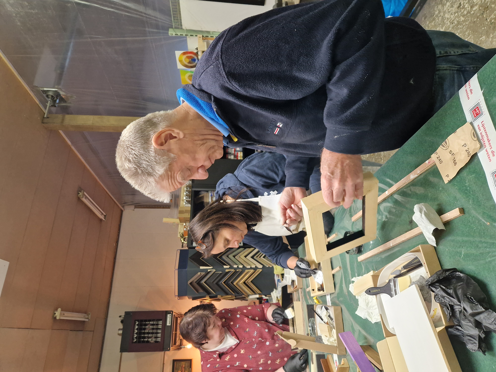
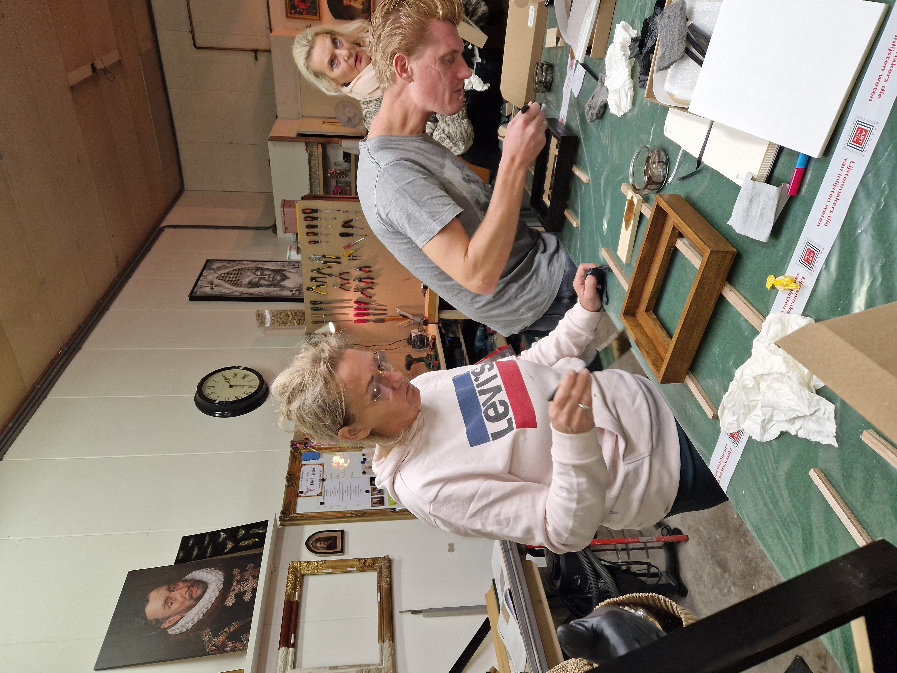
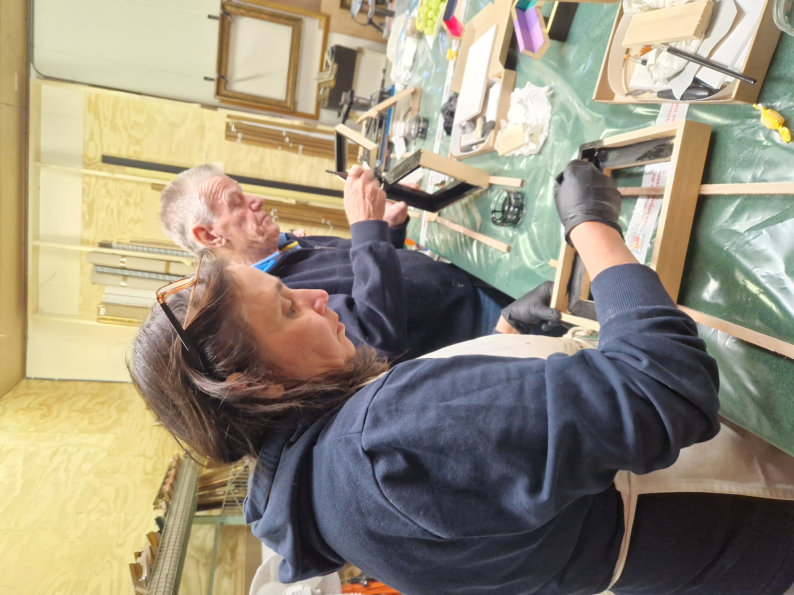
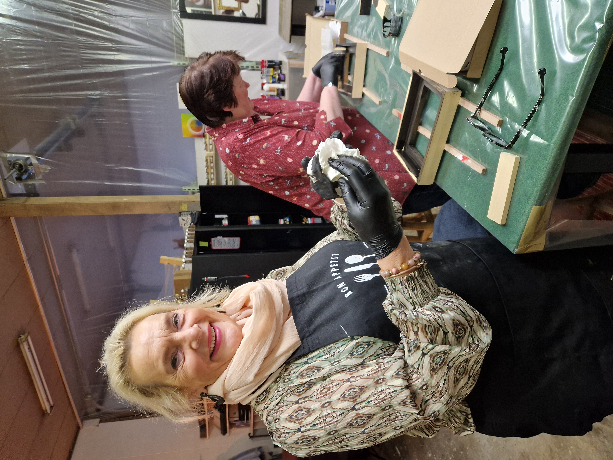
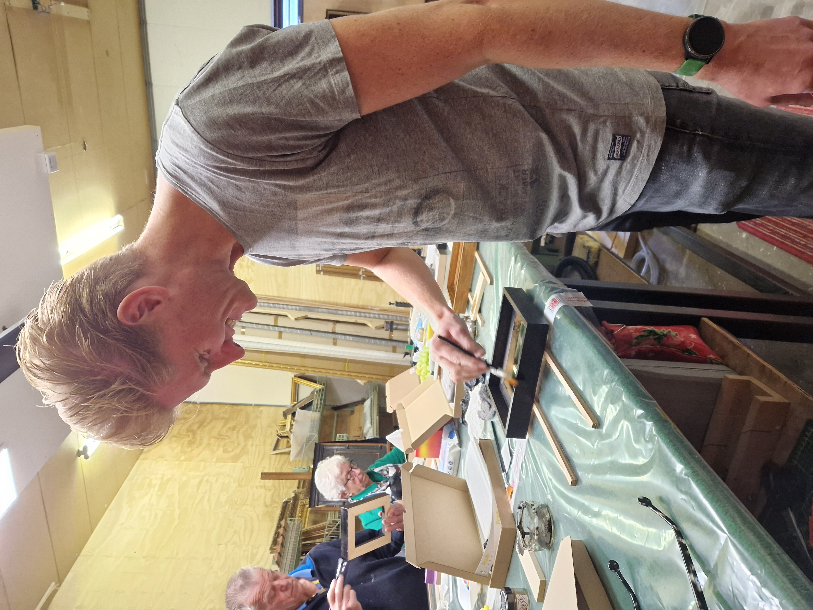
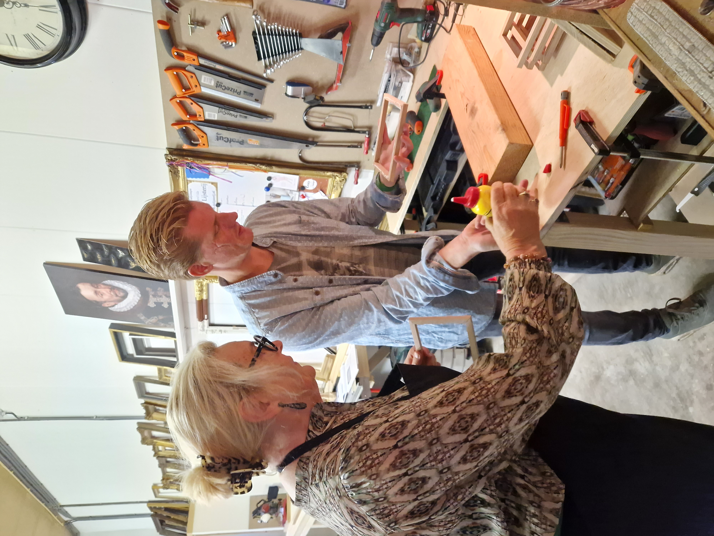
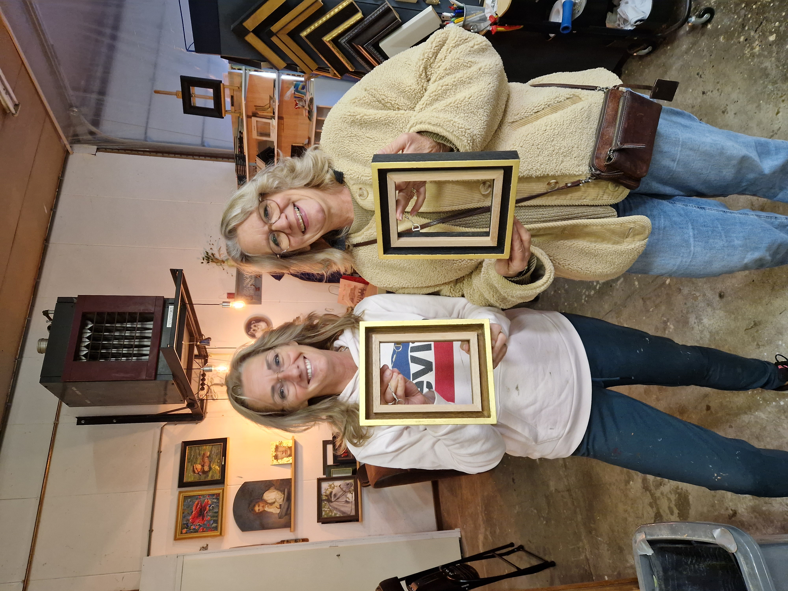

Workshop — 26 oktober 2025
Op zaterdag 26 oktober 2025 vond in De Lijsterij een workshop plaats die volledig in het teken stond van de afwerking en presentatie van een kunstwerk. Algemene werkwijze en materialen vindt u op Inlijsten.
Aan de werktafel gingen de deelnemers zelf aan de slag met het kleuren en vergulden van een baklijst. Met kwast, doek en verschillende middelen werd laag voor laag gewerkt aan het oppervlak van de lijst. Door te kleuren ontstaat warmte en diepte in het hout, terwijl vergulden zorgt voor een verfijnde, lichtreflecterende afwerking.
Iedere deelnemer werkte aan een eigen lijst, waardoor er verschillende resultaten ontstonden en goed zichtbaar werd hoeveel invloed de afwerking heeft op de uitstraling van het geheel.
Na het afwerken werd het werk zwevend gemonteerd in de baklijst. Ook het monteren van het ophangsysteem en de laatste afwerking kwamen aan bod. Juist in deze fase wordt duidelijk hoe belangrijk zorgvuldigheid en materiaalgevoel zijn voor het eindresultaat.
Het was een praktische workshop waarin veel zelf gedaan werd — leren door te maken.
Sfeer
Een impressie van de workshop in het atelier.












Vooruitblik
Er zullen in de toekomst meer workshops volgen, rond uiteenlopende onderwerpen binnen het ambacht. Deze zijn nog niet definitief gepland.
Heeft u interesse, wilt u op de hoogte blijven of denkt u aan een workshop met een eigen groep? Stuur gerust een bericht — dan neem ik contact op zodra er iets op de agenda staat.
Contact
Vragen over toekomstige workshops of interesse in deelname? Via het contactformulier kunt u direct een bericht sturen.